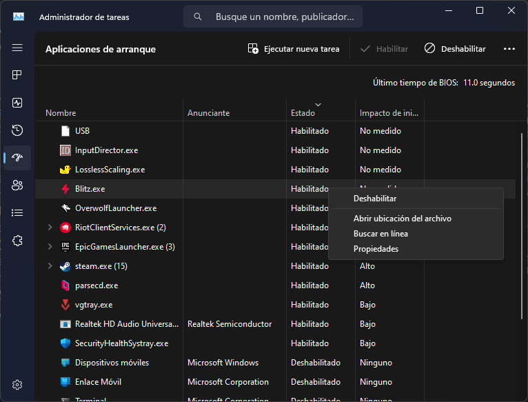
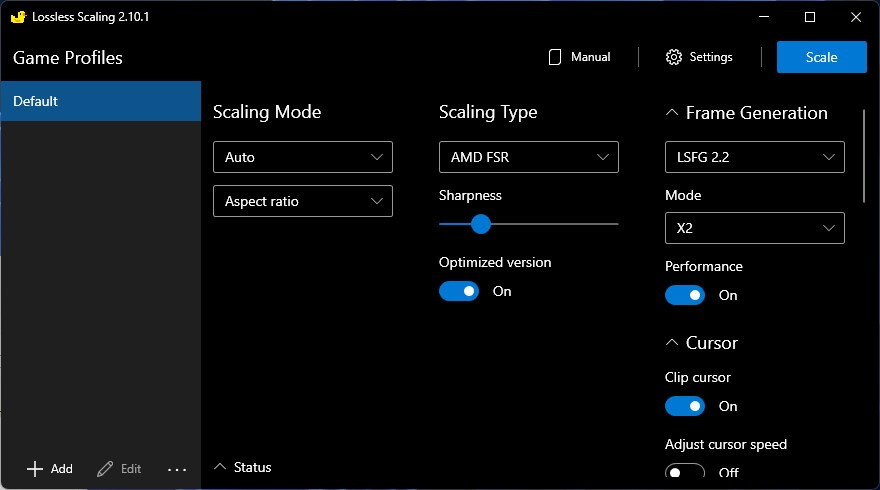
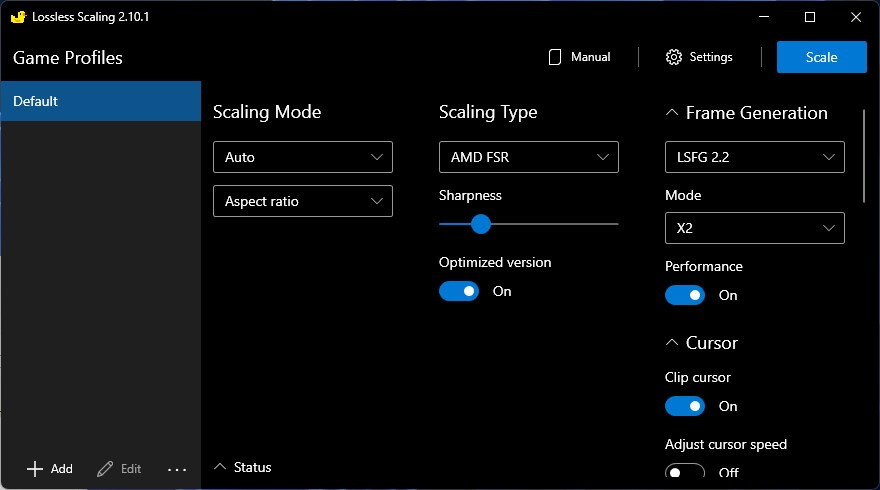

Windows Optimization
- published
- reading time
- 4 minutes
Let’s face it, even though a bunch of people like to dunk on it, and with a lot of valid points, most of the population does end up using microsoft OS for most of their daily desktop computing needs, be it work or leisure, it market share it’s undeniable.
Altough there has been a huge raise of linux users with the release of the various versions of the steam deck, Windows is by far the most used desktop operative system. Unfortulately, the system requirements for the latest editions of windows keep raising and that makes pc’s that could be quite capables of daily computing now obsolete, because of such OS requirements. There is workaround to this issues, you can use a custom windows edition, and install windows 11 without the need of TPM 2.0, however I would advice not to trust custom operating systems, since you cannot trust they sources, but to be completely honest, you can’t trust windows to keep from looking at your files, nor from selling or outright keeping them safe, and with the same reasoning you can’t trust most of games and programs nowadays with their multiple levels of kernel level rootkits, but rant aside, if you are on the list of people that can’t/aren’t ready to the jump to linux yet, you can improve your QoL by doing the following steps:
-
Switch to Open-source software.
- Specially if it’s multiplatform, aka can run on other systems. I plan to make a list on the programs that I use so stay tuned for that.
-
Debloat windows
- There is a plethora of tools available to prune and chop bloatware from windows, one of my favorites is atlasos but be mindful, I wouldn’t trust anything personal on that system, but as a easy kinda-one-step process, it’s quite good.
Performance tweaks
If you are going to stay on windows at least get the best experience possible, I will divide this in paid and free categories, this guide will enfasize on gaming performance .
Free
- Disable apps on startup Go to the task manager and click on start up apps then right click and click on disable on anything you do not need. 
- Uninstall Old/unused apps
- Specially if you have a prebuild or laptop, sometimes they come preinstalled with MULTIPLE antiviruses, which not only slow you down to a snail pace but also can have one av fight the other one(s) for control of your pc, personally I would try to uninstall anything when a get a new pc, or just format from scratch and forget that the disk had something in it.
- Disable Virtualization There has been a few windows patches now where virtualization will cause your system to lose some performance. If you have no idea what is this used for, go ahead and disable it. For this you will have to go to the bios/uefi and turn off the intel-vtd or amd-vt in case of AMD If you do need it, or don’t want to dig in the bios (shame on you), you could get away with only disabling core isolation in the windows setting
- Disabling Meldown/Spectre protection
- Proceed with Care
- Disabling this will expose you to vulnerabilities before mentioned, do not activate any of this on machines that are accesible for people that are not of trust.
- Here’s the link for the download and more info
Paid
- Loseless Scaling
- Pretty cheap and quick solution to get more FPS with out to much hassle here’s my recommended settings.

- Just be mindful of using FSR as Scaling type with the latest frame generation method and x2 mode, x3 will increase your frames but also increase latency and artifacts considerably.
- Pretty cheap and quick solution to get more FPS with out to much hassle here’s my recommended settings.

- The Obvious one, Get a new GPU A big fat gpu will give you a bunch more gaming performance, but they will be the most expensive part of a pc, if you can afford it, go for it.
- Switch to an SSD
- It’s 2024, I know that not every budget can allow it, but if you have the chance, and this goes for linux users too. Get yourself an SSD!, it won’t affect gaming performance outside some newer games like starfield, but it will do wonders for general system responsivness, boot times and other load times.